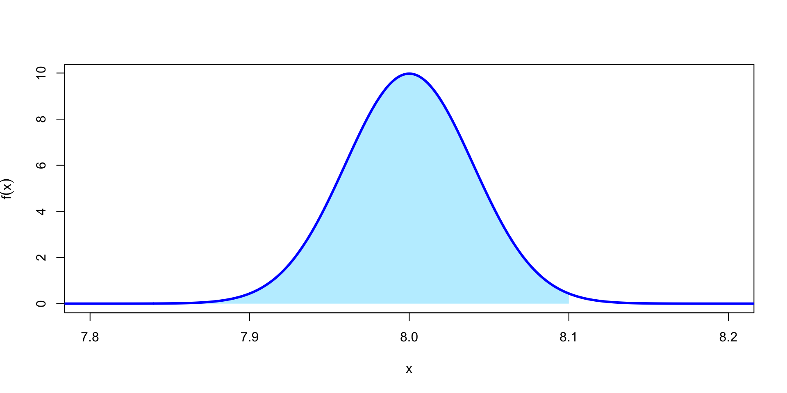
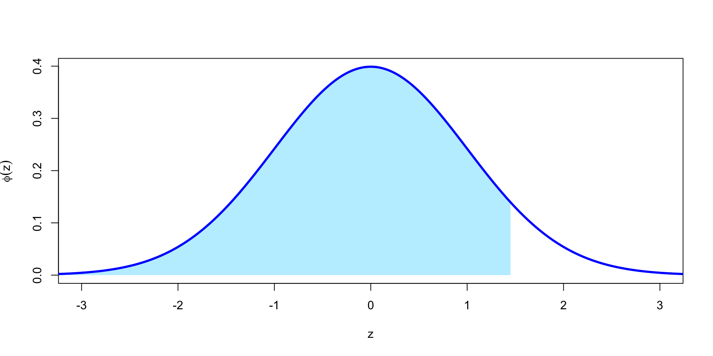
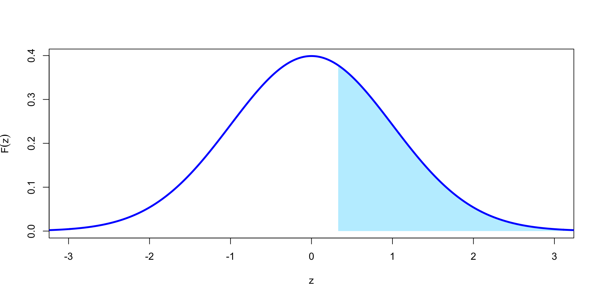
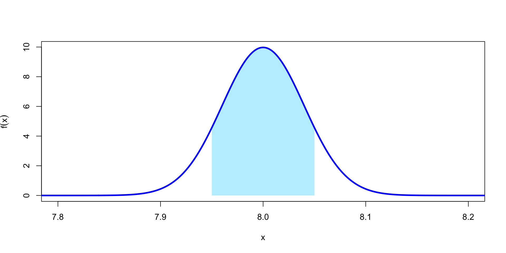
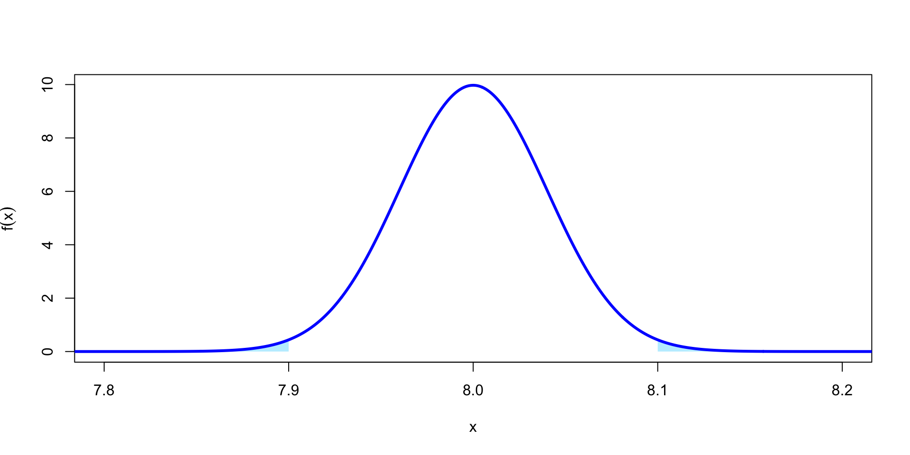
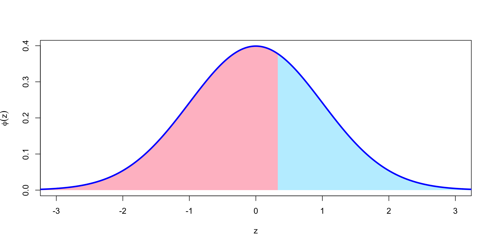
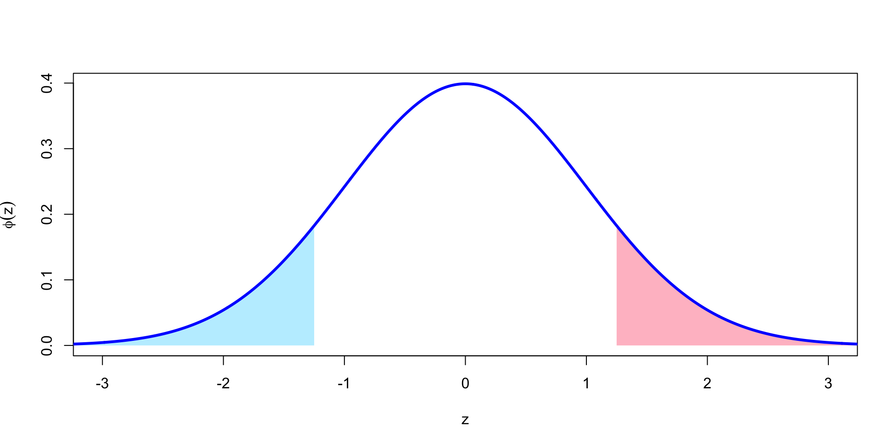

Question 1. A fiberoptic fibre is manufactured with an average width of 8 nanometres (nm), with a standard deviation of 0.04 nm. Fibres that are wider than 8.1 nm fail testing and must be discarded. If the manufactured width is modelled as normally distributed, then what proportion of fibres pass the test?
Question 1. A fiberoptic fibre is manufactured with an average width of 8 nanometres (nm), with a standard deviation of 0.04 nm. Fibres that are wider than 8.1 nm fail testing and must be discarded. If the manufactured width is modelled as normally distributed, then what proportion of fibres pass the test?
Let \(X \sim \mathrm{N}(8, 0.04^2)\) denote the width of a random fibre, measured in nanometres.
Then this question required us to find \[ F(8.1) = \mathbb P(X \leq 8.1) = \frac{1}{\sqrt{2\pi\times 0.04^2}} \int_{-\infty}^{8.1} \exp \left(-\frac{(x - 8)^2}{2\times 0.04^2} \right) \, \mathrm dx . \]
\[ F(8.1) = \mathbb P(X \leq 8.1) = \frac{1}{\sqrt{2\pi\times 0.04^2}} \int_{-\infty}^{8.1} \exp \left(-\frac{(x - 8)^2}{2\times 0.04^2} \right) \, \mathrm dx . \]
Question 1. A fiberoptic fibre is manufactured with an average width of 8 nanometres (nm), with a standard deviation of 0.04 nm. Fibres that are wider than 8.1 nm fail testing and must be discarded. If the manufactured width is modelled as normally distributed, then what proportion of fibres pass the test?
Then this question required us to find \[ F(8.1) = \mathbb P(X \leq 8.1) = \frac{1}{\sqrt{2\pi\times 0.04^2}} \int_{-\infty}^{8.1} \exp \left(-\frac{(x - 8)^2}{2\times 0.04^2} \right) \, \mathrm dx . \]
Unfortunately, it is not possible to calculate this integral exactly.
However, computers can approximate this integral very accurately and very quickly. In R, this is done with the pnorm() function, which calculates the CDF of a normal distribution.
Question 1. A fiberoptic fibre is manufactured with an average width of 8 nanometres (nm), with a standard deviation of 0.04 nm. Fibres that are wider than 8.1 nm fail testing and must be discarded. If the manufactured width is modelled as normally distributed, then what proportion of fibres pass the test?
pnorm() typically takes three arguments:
Question 1. A fiberoptic fibre is manufactured with an average width of 8 nanometres (nm), with a standard deviation of 0.04 nm. Fibres that are wider than 8.1 nm fail testing and must be discarded. If the manufactured width is modelled as normally distributed, then what proportion of fibres pass the test?
Let \(X \sim \mathrm{N}(8, 0.04^2)\). Then this question required us to find \[ F(8.1) = \mathbb P(X \leq 8.1) = \frac{1}{\sqrt{2\pi\times 0.04^2}} \int_{-\infty}^{8.1} \exp \left(-\frac{(x - 8)^2}{2\times 0.04^2} \right) \, \mathrm dx . \]
Question 2. Let \(Z \sim \mathrm{N}(0,1)\). What is \(\mathbb P(Z \leq 1.45)\)?
Question 2. Let \(Z \sim \mathrm{N}(0,1)\). What is \(\mathbb P(Z \leq 1.45)\)?
Question 2. Let \(Z \sim \mathrm{N}(0,1)\). What is \(\mathbb P(Z \leq 1.45)\)?
This is asking for \(\Phi(1.45) = \mathbb P(Z \leq 1.45)\).
Question 2. Let \(Z \sim \mathrm{N}(0,1)\). What is \(\mathbb P(Z \leq 1.45)\)?
The standard normal distribution CDF \(\Phi\) is so common that R allows you to omit the values of \(\mu\) and \(\sigma\) if they are 0 and 1 respectively.
Question 3. Let \(Z \sim \mathrm{N}(0,1)\). What is \(\mathbb P(Z > 0.33)\)?
Question 3. Let \(Z \sim \mathrm{N}(0,1)\). What is \(\mathbb P(Z > 0.33)\)?
Question 3. Let \(Z \sim \mathrm{N}(0,1)\). What is \(\mathbb P(Z > 0.33)\)?
This is asking for the upper-tail probability.
The direct way to get R to solve this is to use the lower.tail = FALSE option that we discussed in R Worksheet 7.
Question 3. Let \(Z \sim \mathrm{N}(0,1)\). What is \(\mathbb P(Z > 0.33)\)?
Alternatively, we could use the fact that \(\mathbb P(Z > z) = 1 - \mathbb P(Z \leq z) = 1 - \Phi(z)\).
Question 4. We return to the fiberoptic model \(X \sim \mathrm{N}(8, 0.04^2)\) from Question 1. Fibres can be awarded a special “high quality” stamp if their width is between 7.95 and 8.05 nm. What proportion of these fibres qualify?
Question 4. We return to the fiberoptic model \(X \sim \mathrm{N}(8, 0.04^2)\) from Question 1. Fibres can be awarded a special “high quality” stamp if their width is between 7.95 and 8.05 nm. What proportion of these fibres qualify?
Question 4. We return to the fiberoptic model \(X \sim \mathrm{N}(8, 0.04^2)\) from Question 1. Fibres can be awarded a special “high quality” stamp if their width is between 7.95 and 8.05 nm. What proportion of these fibres qualify?
This is asking for \(\mathbb P(7.95 \leq X \leq 8.05)\).
We can calculate this as \[ \begin{align*} \mathbb P(7.95 \leq X \leq 8.05) &= \mathbb P(X \leq 8.05) - \mathbb P(X < 7.95) \\ &= F(8.05) - F(7.95) . \end{align*}\]
Question 4. We return to the fiberoptic model \(X \sim \mathrm{N}(8, 0.04^2)\) from Question 1. Fibres can be awarded a special “high quality” stamp if their width is between 7.95 and 8.05 nm. What proportion of these fibres qualify?
\[ \begin{align*} \mathbb P(7.95 \leq X \leq 8.05) &= \mathbb P(X \leq 8.05) - \mathbb P(X < 7.95) \\ &= F(8.05) - F(7.95) . \end{align*}\]
Question 5. We stay with the fiberoptic model \(X \sim \mathrm{N}(8, 0.04^2)\) from Questions 1 and 4. The manufacturer wants to be able to advertise that 99.9% of their fibres are between lower and upper limits \(x\) and \(y\). What values of \(x\) and \(y\) can they promise?
Question 5. We stay with the fiberoptic model \(X \sim \mathrm{N}(8, 0.04^2)\) from Questions 1 and 4. The manufacturer wants to be able to advertise that 99.9% of their fibres are between lower and upper limits \(x\) and \(y\). What values of \(x\) and \(y\) can they promise?
Question 5. We stay with the fiberoptic model \(X \sim \mathrm{N}(8, 0.04^2)\) from Questions 1 and 4. The manufacturer wants to be able to advertise that 99.9% of their fibres are between lower and upper limits \(x\) and \(y\). What values of \(x\) and \(y\) can they promise?
Is \(F\) is the CDF of this distribution, then we are looking for \(x\) and \(y\) such that \(F(x) = 0.0005\) and \(F(y) = 0.9995\). That way, \(F(y) - F(x) = 0.999\), so we have 99.9% of fibres within that interval and 0.05% outside either side.
Question 5. We stay with the fiberoptic model \(X \sim \mathrm{N}(8, 0.04^2)\) from Questions 1 and 4. The manufacturer wants to be able to advertise that 99.9% of their fibres are between lower and upper limits \(x\) and \(y\). What values of \(x\) and \(y\) can they promise?
Is \(F\) is the CDF of this distribution, then we are looking for \(x\) and \(y\) such that \(F(x) = 0.0005\) and \(F(y) = 0.9995\). That way, \(F(y) - F(x) = 0.999\), so we have 99.9% of fibres within that interval and 0.05% outside either side.
You may remember from R Worksheet 7 that the inverse \(F^{-1}\) of the CDF is called the quantile function.
Here, we want \(F^{-1}(0.0005)\) and \(F^{-1}(0.9995)\). The quantile function for the normal distribution in R is qnorm(). (It also has a lower.tail = FALSE option, which is sometimes useful.)
Question 5. We stay with the fiberoptic model \(X \sim \mathrm{N}(8, 0.04^2)\) from Questions 1 and 4. The manufacturer wants to be able to advertise that 99.9% of their fibres are between lower and upper limits \(x\) and \(y\). What values of \(x\) and \(y\) can they promise?
Question 2. Let \(Z \sim \mathrm{N}(0,1)\). What is \(\mathbb P(Z \leq 1.45)\)?
Question 2. Let \(Z \sim \mathrm{N}(0,1)\). What is \(\mathbb P(Z \leq 1.45)\)?
This is asking for \(\Phi(1.45) = \mathbb P(Z \leq 1.45)\).
Consulting the statistical tables, we see \(\Phi(1.45)\) is listed on the table.
From column 3, row 10 of Table 1 that \(\Phi(1.45) = 0.9265\).
This is the same value as we got from R (although we get fewer decimal places from the table).
Question 1. A fiberoptic fibre is manufactured with an average width of 8 nanometres (nm), with a standard deviation of 0.04 nm. Fibres that are wider than 8.1 nm fail testing and must be discarded. If the manufactured width is modelled as normally distributed, then what proportion of fibres pass the test?
Question 1. A fiberoptic fibre is manufactured with an average width of 8 nanometres (nm), with a standard deviation of 0.04 nm. Fibres that are wider than 8.1 nm fail testing and must be discarded. If the manufactured width is modelled as normally distributed, then what proportion of fibres pass the test?
If \(X \sim \mathrm{N}(8, 0.04^2)\), then this asks for \(F_X(8.1) = \mathbb P(X \leq 8.1)\).
The statistical tables only have the CDF \(\Phi\) for the standard normal distribution \(\mathrm N(0,1)\).
We have “standardise” \(X\); that is, convert \(X\) to a standard normal distribution.
Question 1. A fiberoptic fibre is manufactured with an average width of 8 nanometres (nm), with a standard deviation of 0.04 nm. Fibres that are wider than 8.1 nm fail testing and must be discarded. If the manufactured width is modelled as normally distributed, then what proportion of fibres pass the test?
We standardise a normal random variable by subtracting the expectation \(\mu\) and dividing by the standard deviation \(\sigma\): \[ Z = \frac{X - \mu}{\sigma} = \frac{X - 8}{0.04} \sim \mathrm{N}(0,1) . \]
Using this, we can write \[ \mathbb P(X \leq 8.1) = \mathbb P \left(\frac{X - 8}{0.04} \leq \frac{8.1 - 8}{0.04}\right) = \mathbb P(Z \leq 2.5) = \Phi(2.5). \]
We can then look up \(\Phi(2.5)\) in Table 1. We see from the first row of the last column that \(\Phi(2.5) = 0.9938\).
This matches the answer we got from R.
Question 3. Let \(Z \sim \mathrm{N}(0,1)\). What is \(\mathbb P(Z > 0.33)\)?
Question 3. Let \(Z \sim \mathrm{N}(0,1)\). What is \(\mathbb P(Z > 0.33)\)?
The statistical tables only have \(\Phi(z) = \mathbb P(Z \leq z)\).
But \(\mathbb P(Z > 0.33) = 1 - \Phi(0.33)\).
\[\mathbb P(Z > 0.33) = 1 - \Phi(0.33)\]
Question 3. Let \(Z \sim \mathrm{N}(0,1)\). What is \(\mathbb P(Z > 0.33)\)?
The statistical tables only have \(\Phi(z) = \mathbb P(Z \leq z)\).
But \(\mathbb P(Z > 0.33) = 1 - \Phi(0.33)\).
The tables don’t have \(\Phi(0.33)\) either: they jump straight from \(\Phi(0.30)\) to \(\Phi(0.35)\).
We have two choices of what to do.
Question 3. Let \(Z \sim \mathrm{N}(0,1)\). What is \(\mathbb P(Z > 0.33)\)?
The statistical tables only have \(\Phi(z) = \mathbb P(Z \leq z)\). But \(\mathbb P(Z > 0.33) = 1 - \Phi(0.33)\). The tables don’t have \(\Phi(0.33)\) either, though, because they jump straight from \(\Phi(0.30)\) to \(\Phi(0.35)\). We have two choices of what to do.
First choice, which is appropriate when an approximate answer will suffice, is simply to take the nearest value in the table, which here is \(0.35\). Hence \[ \mathbb P(Z > 0.33) = 1 - \Phi(0.33) \approx 1 - \Phi(0.35) = 1 - 0.6368 = 0.3632 . \] This is pretty close to the true answer \(0.3707\) we saw before: about a 2% error.
Question 3. Let \(Z \sim \mathrm{N}(0,1)\). What is \(\mathbb P(Z > 0.33)\)?
We want \(\mathbb P(Z > 0.33) = 1 - \Phi(0.33)\). Second choice, which is more work but more accurate, is to use interpolation.
We know from the table that \(\Phi(0.30) = 0.6179\) and \(\Phi(0.35) = 0.6368\). To “interpolate”, we assume that the graph of \(\Phi\) follows a straight line between \((0.30, 0.6179)\) and \((0.35, 0.6368)\).
As the statistical tables state, take \[ \Phi(x) = \frac{x_2 - x}{x_2 - x_1} \Phi(x_1) + \frac{x - x_1}{x_2 - x_1} \Phi(x_2) .\]
In our case, if we take \(x_1 = 0.30\) and \(x_2 = 0.35\), \(x = 0.33\), we get \[ \Phi(0.33) \approx 0.4 \Phi(0.30) + 0.6 \Phi(0.35) = 0.4\times 0.6179 + 0.6 \times 0.6368 = 0.6292 \]
This is off by only 0.01%: very accurate.
On problem sheets or in the exam, you will be specifically told if it’s necessary to use interpolation.
Otherwise, just taking the nearest \(z\) is good enough.
Question 4. We return to the fiberoptic model \(X \sim \mathrm{N}(8, 0.04^2)\) from Question 1. Fibres can be awarded a special “high quality” stamp if their width is between 7.95 and 8.05 nm. What proportion of these fibres qualify?
Question 4. We return to the fiberoptic model \(X \sim \mathrm{N}(8, 0.04^2)\) from Question 1. Fibres can be awarded a special “high quality” stamp if their width is between 7.95 and 8.05 nm. What proportion of these fibres qualify?
We need \(\mathbb P(7.95 \leq X \leq 8.05)\). We will have to standardise.
\[ \begin{align} \mathbb P(7.95 \leq X \leq 8.05) &= \mathbb P \left(\frac{7.95 - 8}{0.04} \leq \frac{X - 8}{0.04} \leq \frac{8.05 - 8}{0.04}\right) \\ &= \mathbb P(-1.25 \leq Z \leq 1.25) \\ &= \Phi(1.25) - \Phi(-1.25) . \end{align} \]
We can find \(\Phi(1.25) = 0.8944\) from the table.
But the table only gives \(\Phi(x)\) for positive \(x\), so we can’t look up \(\Phi(-1.25)\).
Question 4. We return to the fiberoptic model \(X \sim \mathrm{N}(8, 0.04^2)\) from Question 1. Fibres can be awarded a special “high quality” stamp if their width is between 7.95 and 8.05 nm. What proportion of these fibres qualify?
We can find \(\Phi(1.25) = 0.8944\) from the table. But the table only gives \(\Phi(x)\) for positive \(x\), so we can’t look up \(\Phi(-1.25)\).
Instead, we can use the symmetry of the normal distribution. Because the standard normal is symmetric about 0, we have \[ \mathbb P(Z \leq -1.25) = \mathbb P(Z > 1.25) . \]
\[ \mathbb P(Z \leq -1.25) = \mathbb P(Z > 1.25) . \]
Question 4. We return to the fiberoptic model \(X \sim \mathrm{N}(8, 0.04^2)\) from Question 1. Fibres can be awarded a special “high quality” stamp if their width is between 7.95 and 8.05 nm. What proportion of these fibres qualify?
\[ \Phi(-1.25) = 1 - \Phi(1.25) = 1 - 0.8944 = 0.1056 \]
Putting this all together, \[ \mathbb P(7.95 \leq X \leq 8.05) = 0.8944 - 0.1056 = 0.7888 , \] which is the same as we got from R (up to a small rounding error in the fourth decimal place).
Question 5. We stay with the fiberoptic model \(X \sim \mathrm{N}(8, 0.04^2)\) from Questions 1 and 4. The manufacturer wants to be able to advertise that 99.9% of their fibres are between lower and upper limits \(x\) and \(y\). What values of \(x\) and \(y\) can they promise?
Question 5. We stay with the fiberoptic model \(X \sim \mathrm{N}(8, 0.04^2)\) from Questions 1 and 4. The manufacturer wants to be able to advertise that 99.9% of their fibres are between lower and upper limits \(x\) and \(y\). What values of \(x\) and \(y\) can they promise?
We are looking for the quantiles \(F^{-1}(0.0005)\) and \(F^{-1}(0.9995)\); the values \(x\) and \(y\) such that \(\mathbb P(X \leq x) = 0.0005\) and \(\mathbb P(X \leq x) = 0.9995\).
Table 2 of the statistical tables does show us some quantiles for a standard normal \(\mathrm{N}(0,1)\). How can we use these?
Question 5. We stay with the fiberoptic model \(X \sim \mathrm{N}(8, 0.04^2)\) from Questions 1 and 4. The manufacturer wants to be able to advertise that 99.9% of their fibres are between lower and upper limits \(x\) and \(y\). What values of \(x\) and \(y\) can they promise?
We “undo” the standardisation.
If \(\displaystyle \frac{X-\mu}{\sigma} = Z \sim \mathrm{N}(0,1)\), then \(X = \sigma Z + \mu \sim \mathrm{N}(\mu, \sigma^2)\).
Question 5. We stay with the fiberoptic model \(X \sim \mathrm{N}(8, 0.04^2)\) from Questions 1 and 4. The manufacturer wants to be able to advertise that 99.9% of their fibres are between lower and upper limits \(x\) and \(y\). What values of \(x\) and \(y\) can they promise?
We “undo” the standardisation.
If \(\displaystyle \frac{X-\mu}{\sigma} = Z \sim \mathrm{N}(0,1)\), then \(X = \sigma Z + \mu \sim \mathrm{N}(\mu, \sigma^2)\).
The table says \(\Phi^{-1}(0.9995) = 3.2905\); so \(\mathbb P(Z \leq 3.2905) = 0.9995\).
Then by “un-standardising”, \[ 0.9995 = \mathbb P(Z \leq 3.2905) = \mathbb P(0.04Z + 8 \leq 0.04\times 3.2905 + 8) = \mathbb P(X \leq 8.1316) . \]
This the upper quantile we are after is \(8.1316\).
Question 5. We stay with the fiberoptic model \(X \sim \mathrm{N}(8, 0.04^2)\) from Questions 1 and 4. The manufacturer wants to be able to advertise that 99.9% of their fibres are between lower and upper limits \(x\) and \(y\). What values of \(x\) and \(y\) can they promise?
For the lower quantile, we can use symmetry again.
The \(0.0005 = 1 - 0.9995\) quantile for \(Z\) is minus the previous quantile; that is, \(-3.2905\).
The lower quantile is \[ 0.04\times (-3.2905) + 8 = 7.8684. \]
These match the answers we got with R.